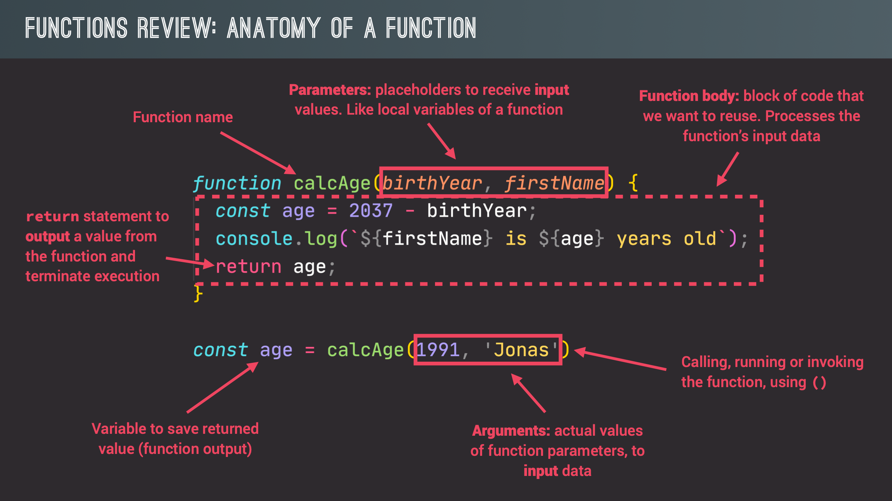

In JavaScript, you can call a function that returns another function by first assigning the returned function to a variable and then calling it using the variable name, followed by parentheses.

function cutFruitPieces(fruit) {
return fruit * 4;
}
function fruitProcessor(apples, oranges) {
const applePieces = cutFruitPieces(apples);
const orangePieces = cutFruitPieces(oranges);
const juice = `Juice with ${applePieces} pieces of apples and
${orangePieces} pieces of oranges.`;
return juice;
}
console.log(fruitProcessor(2, 3));
Answer: Juice with 8 pieces of apples and 12 pieces of oranges.
Another Example:
function howMany(amount) {
return amount * 2;
}
function vendingMachine(bought) {
const howManyBought = howMany(5);
const whatIBought = `I was hungry so I bought and ate ${howManyBought}
${bought} from the vending machine.`;
return whatIBought;
}
console.log(vendingMachine("Snickers Bars"));
Answer: I was hungry so I bought and ate 10 Snickers Bars from the vending
machine.